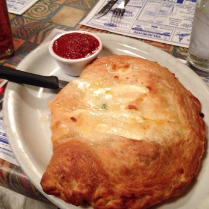

Wyatt's Calzone

Today I'll show you how to make the lazy man's calzone
What You Need:
- One ball of Walmart dough
- Some flour
- Ricotta cheese (half a pint is fine)
- Mozarella cheese
- A fork
- rolling pin
- And an oven pre-heated to 400F
- A pan
- Cooking oil of some kind
How To Make It:
- lightly flour your counter and rolling pin
- Rollout your dough nice and thin
- Add half a pint of ricotta and equal amount mozarella to one side
- close using the side you didn't add cheese
- Use fork to seal edge. Feel free to roll and then fork down
- Cut a quarter sized hole on top, this helps it vent
- Lightly oil a pan and add your calzone to it
- Place onto pan and bake in 400F degree oven for 20 mins
Now Eat!
Other Recipes
Peanut Butter And Jelly
Avocado Toast
Scrambled Eggs